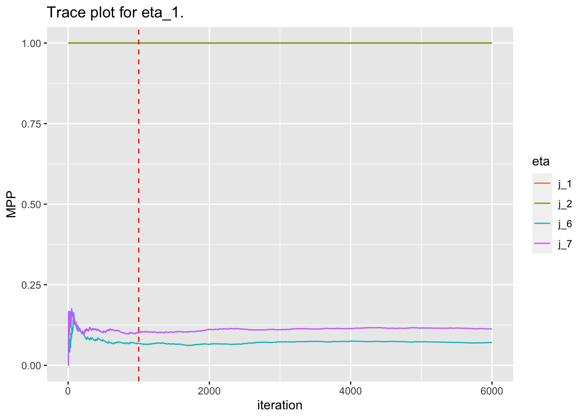

Below is the trace plot for \(\gamma\)’s MPPs. Note: Components 1 and 2 are getting selected ~100% of the time.
n_burnin <-1000r <-4gamma_names <-paste("gamma", 1:r, sep ="_")gamma_df <- gamma_chain[, 1:n_iterations] %>%apply(MARGIN =1, FUN = cummean) %>%as.data.frame() %>%mutate(iteration =1:n_iterations) %>%gather(key ="gamma", value ="MPP", -iteration) %>%mutate(gamma = gamma %>%as.factor()) # TODO use latex in the title and labels e.g. latex2exp::TeX("$\\alpha$")gamma_plot <-ggplot(gamma_df, aes(x = iteration, y = MPP, color = gamma)) +geom_line() +geom_vline(xintercept = n_burnin, linetype ="dashed", color ="red") +labs(x ="iteration", y ="MPP", title ="Trace plot for gamma")print(gamma_plot)
Here we start to look at the posterior for \(\eta\).
Note, \(\eta_{lj}=1\) denotes that in the lth component, the jth feature is active.
Since the MCMC selected the first component and second components as active, we start by looking at the results for the first component \(\eta_{1j}\) for \(j=1, 2, 6, 7\) since, truly, \(j=1:5\) active and \(j=6:10\) inactive.
features_of_interest <-c(1, 2, 6, 7)feature_names <-paste("j", features_of_interest, sep ="_")# TODO make trace plot function to reduce copy paste going forwardeta_df <- eta_chain[1, features_of_interest, 1:n_iterations] %>%apply(MARGIN =1, FUN = cummean) %>%as.data.frame() %>%rename_at(vars(names(.)), ~ feature_names) %>%mutate(iteration =1:n_iterations) %>%gather(key ="eta", value ="MPP", -iteration) %>%mutate(eta = eta %>%as.factor()) eta_1_plot <-ggplot(eta_df, aes(x = iteration, y = MPP, color = eta)) +geom_line() +geom_vline(xintercept = n_burnin, linetype ="dashed", color ="red") +labs(x ="iteration", y ="MPP", title ="Trace plot for eta_1.")print(eta_1_plot)

Now we calculate the component selection mean after burnin.
The algorithm is selecting the correct active features, but is also selecting the inactive components at high rates. Also, it’s concerning that the original BIP() is selecting the first and third components.
Follow-up on original BIP() component selection
On generating data at the same seed, I ran BIP() and received different results. This time, the first and second components were selected. I’m wondering if my inability to reproduce the results above has to do with the seed setting ‘under the hood’ of Thierry’s original C code. Otherwise, there’s an issue in the submission of my job script and file saving scheme.